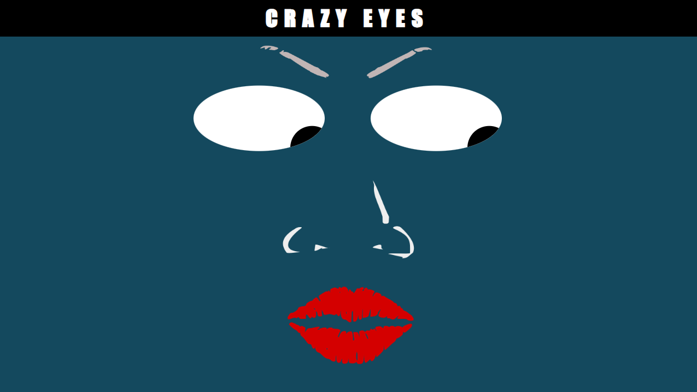
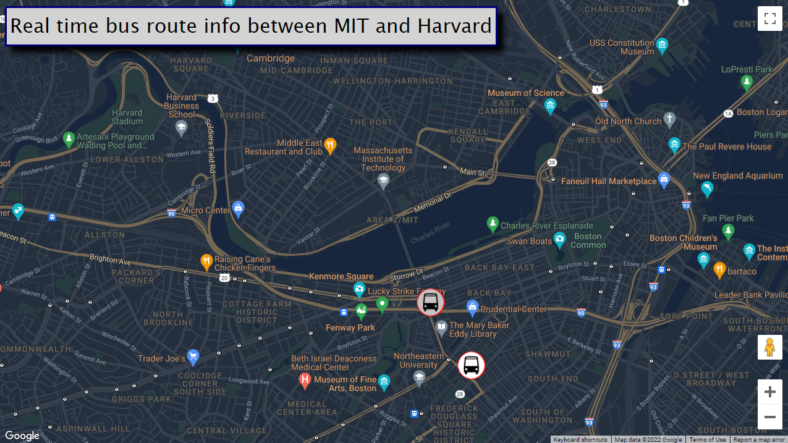

PAC MEN EXERCISE
In this exercise, we learned how to create an on-click event to not only start the Pac-Man game but an on-click event that also adds a Pac-Man to the screen with every click. This is done with Javascript using Math.random and such, so that each Pac-Man that is added to the screen has its speed and velocity enabling each Pac-Man to travel across the page at different speeds and directions. I chose to do a bit of customization to the exercise by adding audio and graphics that bring life to the assignment. Just for a bit of fun!
Live Version of Project
Git Hub Project Files

EYES EXERCISE
This was a really fun assignment. The assignment takeaways were showing us out to style a page programmatically. The result is a set of eyes that move across the screen that follow the movement of the users' mouse. I again chose to get a bit creative by giving the eyes a complete face.
Live Version of Project
Git Hub Project Files

REAL TIME BUS TRACKER EXERCISE
I chose to use the real-time bus route that runs daily from M.I.T. to Harvard. The live feed shows the location and direction that each bus is traveling in real-time. In this exercise, we learned how to fetch data via an external API to provide real-time bus tracking details. This was a very cool assignment, and despite its challenges; I submitted a customized version of the assignment. The customizations included personalized styles to the map layout and custom-created bus icons.
Live Version of Project
Real Time Bus Tracker Exercise - Live
Git Hub Project Files
